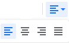
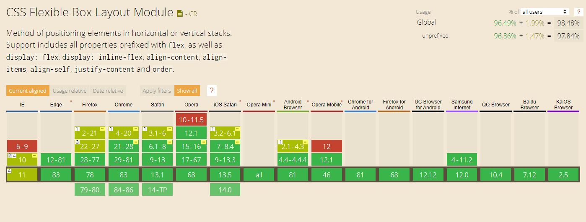
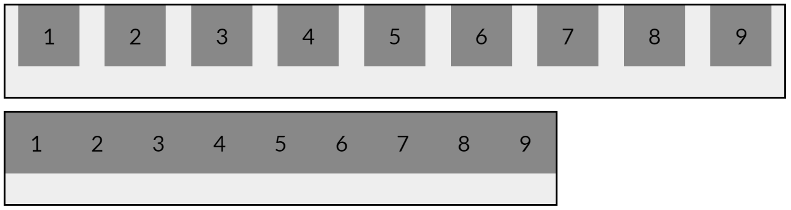
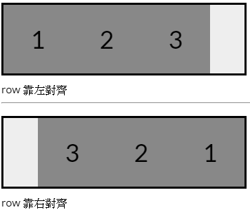
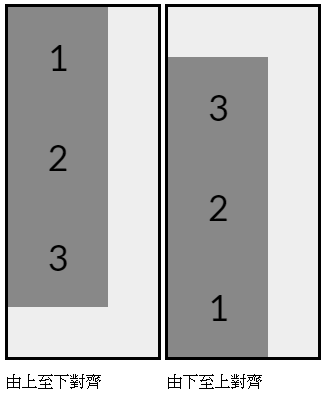
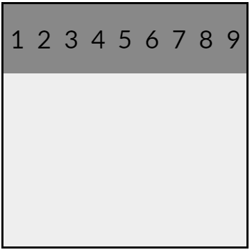
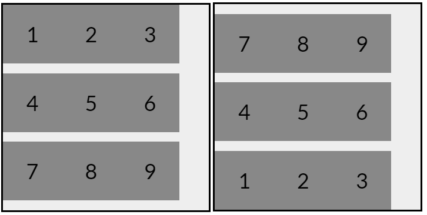
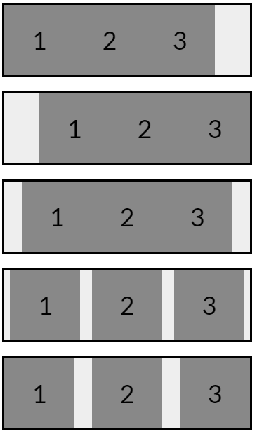
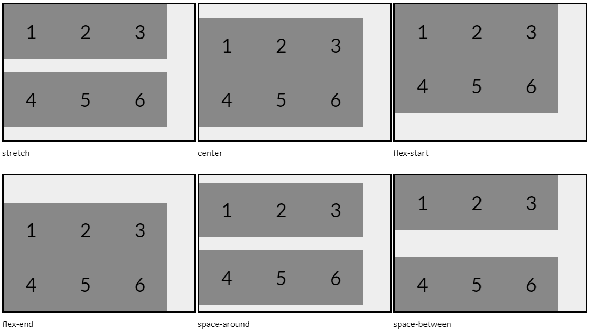
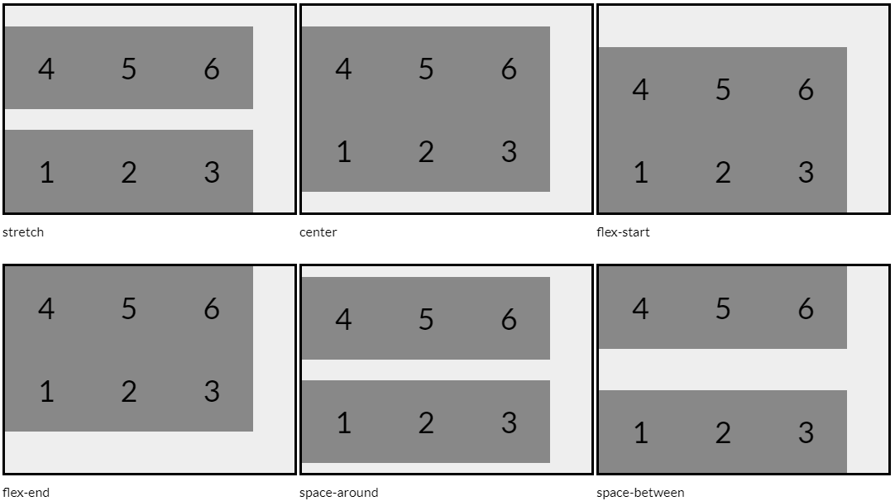

簡介
FLEX 的對齊方法就類似是 Google 文件 或 WORD 的文字對齊工具

CSS Flexible Box Layout Module
在 W3C 有介紹到 Flexbox 就是為了優化設計的 CSS 模型 ( Module ) ，最重要的是 具有靈活佈局的功能 ，這使用在自適應網頁上排版設計就變得更加簡單方便。
而且用 Can I use 查詢幾乎所有的瀏覽器都有支援

Flexbox 的架構
要使用 Flexbox 模型佈局，就必須在全部元素外加上一個 外層容器 包著並設定，而全部被包著的元素才會是可排版佈局的 內層元件
外層容器
在 HTML 建立一個外層範圍 container
1 | <div class="container"></div> |
並在 CSS 設定範圍內具有 Flexbox 佈局功能
1 | .container { |
軸線
- 在模型內的軸線稱為 主軸 ( main axis ) 和 交錯軸 ( cross axis ) 。
- 軸線不能稱為 水平軸 和 垂直軸，因為主軸可以是左右水平方向也可以是上下垂直方向。
屬性
- 外層容器的屬性為全部內層相同設定
內層元件
在 container 放入 item 作為 內層元件 ，然後才把文字、圖片相關內容的元素放到 item 內。
1 | <div class="container"> |
- 內層元件
- 必須被 外層容器 包著才會作用
- 作為可靈活排版的元件
- 避免排版被內容的設定影響，文字、圖片相關內容的元素要放到元件內
Flexbox 的屬性
外層容器
display設定值分兩種flex為區塊元素inline-flex為行內元素
1 | .container { |
行內元素 inline-flex 會因為 內容元件 的寬高而改變外層大小
在沒設定寬度時，2 者差別如下圖

內層元件
- 排列方式
flex-direction元件排列順序flex-wrap換行順序
- 元件對齊
排列方向 flex-direction
- 排列方式分兩種 水平 和 垂直
- 水平排列又分 靠左 (向右依序排列)、靠右對齊 (向左依序排列)
水平排列
1 | .container { |

垂直排列
轉成直式的 由上至下、由下至上
1 | .container { |

換行順序
預設在內容太多時，預設會自動縮小全部內容的寬度，讓全部內容都能被看到，但這樣就會改變原來的樣子

所以就可使用換行 flex-wrap: wrap ，每行下方的行間都會平均等高，相反的 flex-wrap: wrap-reverse; 平均等高的行間會在每行上方。
1 | .container { |

對齊
- 水平 X 軸對齊
justify-content - 垂直 Y 軸對齊 分兩種
- 當內容只有一行時
align-items - 內容有多行時
align-content
- 當內容只有一行時
水平的左右對齊
1 | .container { |

垂直的上下對齊
上下對齊分 單行的 align-items 、多行的 align-items 屬性對齊方式，值除了多 space-around 、space-between 的不同，其他都是相同的。
單行和多行的上下對齊差別在
單行會有每列的間距、多行不會有每列之間的間距
1 | .container { |

要注意若是有設定換行是使用
flex-wrap: wrap-reverse由下至上換行時，上下排列的方向就會是相反的由下至上排列。